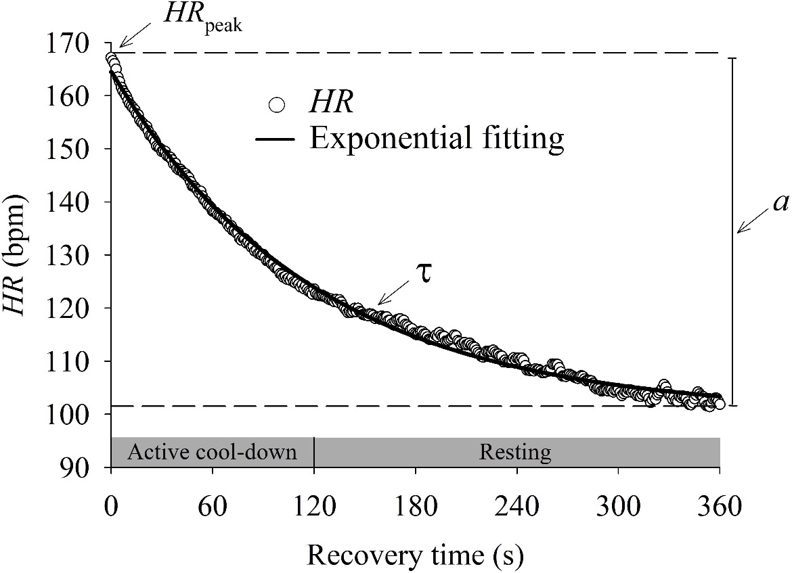
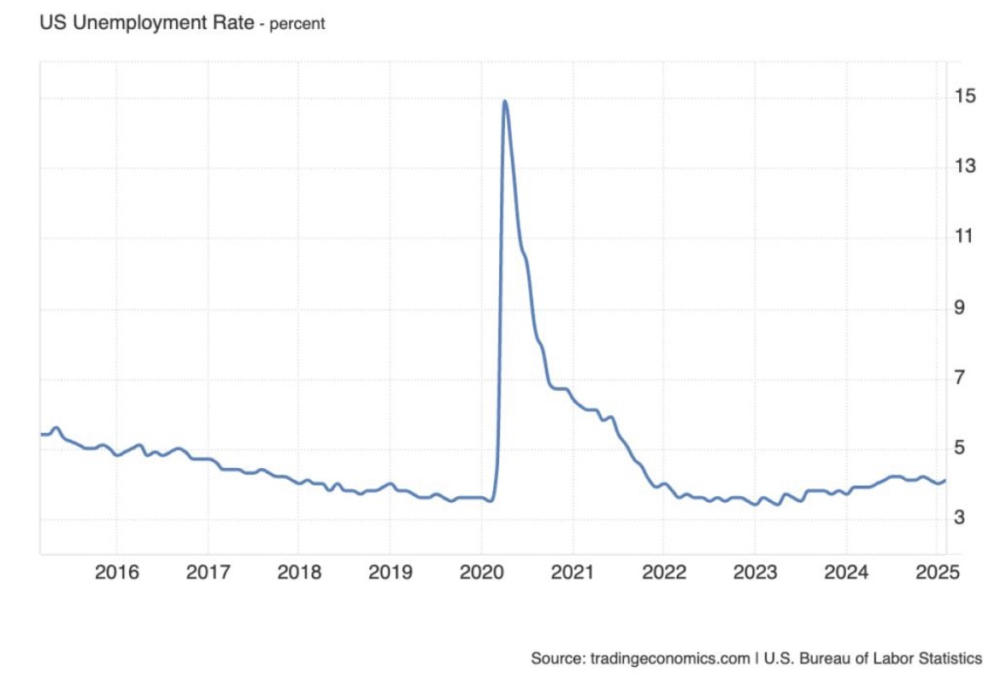
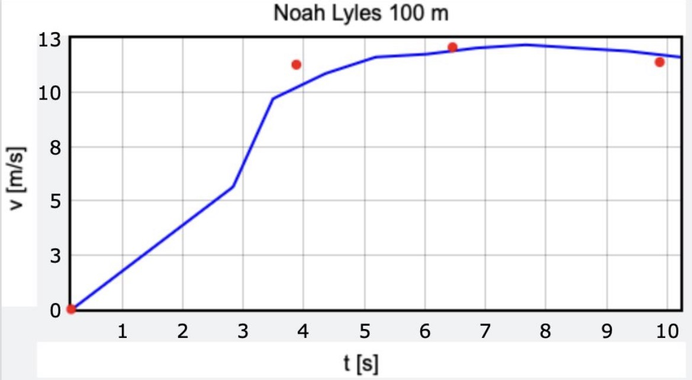

01 / Health
Heart Rate Recovery

Examine how the measured health quantity changes across the time shown on the original graph.
Curves are everywhere. From our health and the weather to the economy and sports, graphs help us understand how the world changes.
ENTER THE ROOM →Three stages. Real-world observations. One challenge: understand what curves can tell us.
Explore real graphs from different areas of everyday life. Read their axes and interpret their curves.
Collect measurements, organize data, draw graphs, and identify the highest and lowest values.
Investigate intersections and compare different shapes through visual reasoning.
Four fields. Four real-world graphs. Look carefully at the horizontal axis, vertical axis, and the shape of each curve.

Examine how the measured health quantity changes across the time shown on the original graph.

Observe how the weather measurement changes throughout the time period shown.

Study how the economic measurement changes over the dates shown on the graph.

Follow the athlete's speed as time passes. Notice the rising, steady, and falling parts.
Measurements become more useful when they are organized. Compare the values, find the maximum and minimum, and describe how the data changes.
Example data showing the number of new likes gained during each hour. These are sample values for demonstration.
| Time | Likes gained |
|---|---|
| 9:00 | 4 |
| 10:00 | 8 |
| 11:00 | 13 |
| 12:00 | 7 |
| 13:00 | 5 |
| 14:00 | 11 |
| 15:00 | 6 |
| 16:00 | 3 |
Maximum: 13 likes at 11:00.
Minimum: 3 likes at 16:00.
Replace this sample table and graph with your group's actual measurements.
Example battery percentage measurements recorded at different times. These are sample values.
| Time | Battery level |
|---|---|
| 8:00 | 100% |
| 9:00 | 91% |
| 10:00 | 82% |
| 11:00 | 74% |
| 12:00 | 65% |
| 13:00 | 57% |
| 14:00 | 68% |
| 15:00 | 79% |
Maximum: 100% at 8:00.
Minimum: 57% at 13:00.
Replace this sample table and graph with your group's actual measurements.
A graph can be investigated by imagining a straight line crossing it. Explore what happens when the line moves.
Imagine moving a vertical line from left to right. Count how many times it crosses the curve at one position.
Imagine moving a horizontal line from bottom to top. Count how many times it crosses the curve.
A vertical line can cross a circle at two different points. Compare this with the curves you studied in the other stages.
The number of intersections depends on the shape of the graph and the position of the line.
Read the question, discuss your reasoning, and vote. The host will reveal the correct answer and its justification.
Study the data before choosing your answer.